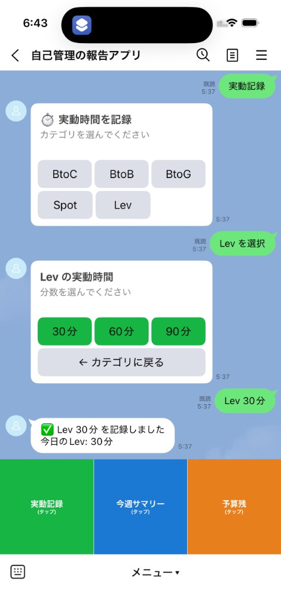
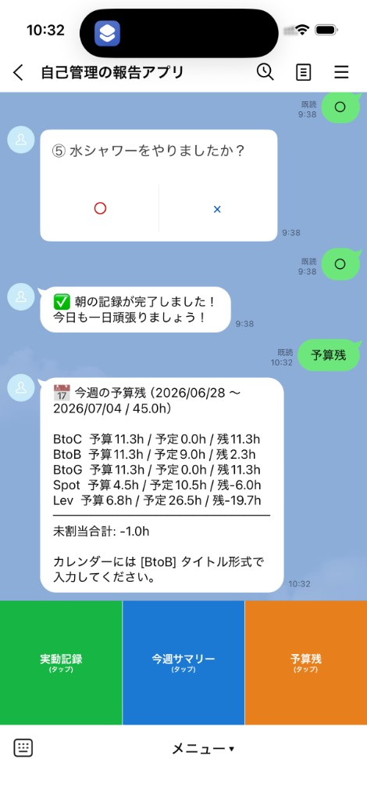

＋
ADDITIONAL
おまけ — 2ヶ月目の課題とのつながり
4ヶ月目の本題はこの PDCA アプリですが、2ヶ月目「面倒な報告をアプリ化する」で作った仕組みも、同じ週次運用のなかで動いています。
📅 Google Calendar（計画）
→
⏱ LINE 実動記録
→
⚡ 鬼速PDCA（振り返り）
カレンダーに入れた予定の稼働時間に対し、作業の切り替え時に LINE ボタンで実動時間を記録する（2ヶ月目課題の GAS + LINE Bot）。面倒な報告を2タップにしたものです。
週次の Check / Adjust はこの PDCA アプリで行い、「何時間使ったか」は LINE、「何を達成したか」は PDCA — 役割を分けて同じ週を振り返っています。

📅 Google Calendar — [BtoB] 等の接頭辞付きで、週の計画（稼働予定）を管理

⏱ 実動 — 2タップで記録

📊 サマリー — 今週の実動合計

💰 予算残 — 計画と実動の差分